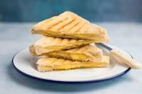

Cheese Toastie Recipe

Ingredients:
- 1 tablespoon salted butter
- 4 slices good-quality bread
- 2 ounces cheddar cheese
- Kosher salt, to taste
- Freshly ground black pepper, to taste
Instructions:
There are some British foods that ooze comfort at the mere mention of their name, and none
more so than the cheese toastie. Alongside a bacon butty (bacon sandwich), the toastie is
the one that makes everyone drool. Cheese toasties are basically the same thing as
American grilled cheese and just as delicious.
- Butter one side of each slice of bread. We don't recommend buttering both sides of
the bread for a cheese toastie since it can make the sandwich a bit soggy.
- Grate the cheddar cheese using a large hole grater (if you use a small hole the cheese
will melt too quickly before the bread has toasted). Divide the cheese between 2 slices
of bread, placing it on the unbuttered side.
- Season with a bit of salt and pepper to taste. Cover with the second slice of bread,
buttered-side up.
- Heat your griddle or frying pan to hot but not smoking. Using a flat spatula, lay
the 2 sandwiches into the hot pan (they should sizzle a little as they hit the pan—if not,
the pan is not hot enough). Gently press the sandwich with the spatula and do not worry
if the cheese leaks a little. Cook for a few minutes on one side pressing from time to
time, then flip it over and repeat on the other side.
- Remove from the pan once the cheese is starting to melt and the bread has turned a golden brown.